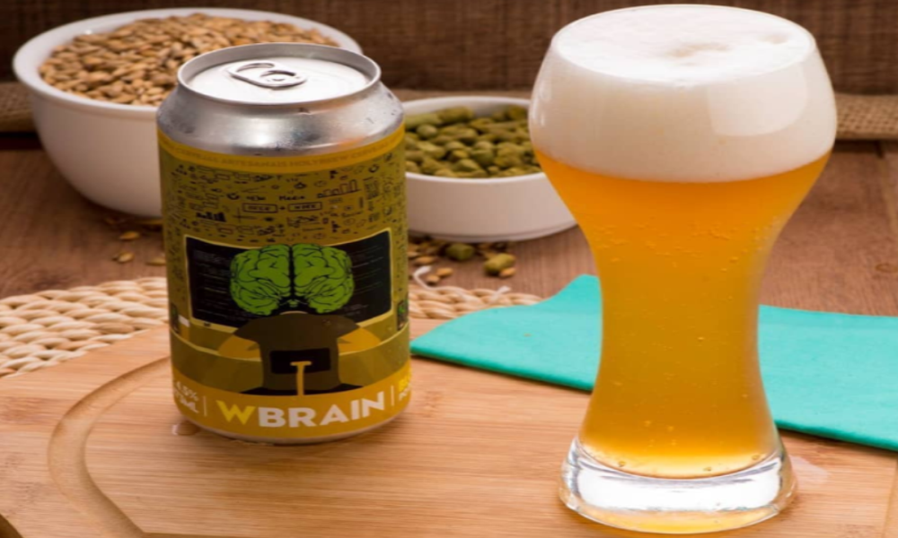

NACIONALIDADE // BRASIL (Porto Alegre)
CARACTERÍSTICAS // Pouco lúpulo, guaraná e alecrim.
HARMONIZAÇÃO // Frutos do mar em geral, saladas e omelete.
INGREDIENTES // Água, malte, lúpulo, pó de guaraná e alecrim.
Descrição
A WBrain é uma cerveja especial da Holy Brew e foi desenvolvida a partir de uma conversa entre colegas de empresa, sobre como seria incrível ter uma cerveja estimulante para beber durante o trabalho. Então, a Holy foi atrás e criou a WBrain, uma cerveja do estilo Blond Ale (caracterizada por possuir menor quantidade de lúpulo, um dos responsáveis pela sensação de embriaguez), acrescentando Alecrim para benefício da memória e Pó de Guaraná, estimulante que auxilia a melhora do humor e intensifica a atenção, concentração e motivação.
Onde encontrar?

HOLY BREW
EndereçoAv. Vicente Monteggia, 926 - Cavalhada, Porto Alegre - RS